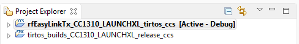
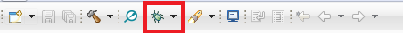
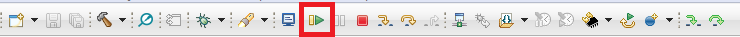
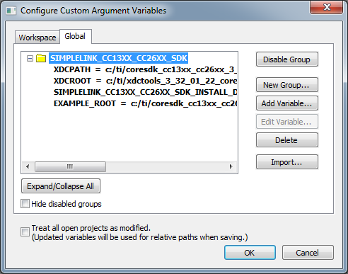

Examples User’s Guide¶
The Proprietary RF examples are split into 2 types:
- RF Driver Examples
- EasyLink Examples
The RF driver offers very low-level API’s to run radio operation commands on the RF core and send and receive raw packets.
The EasyLink layer is an abstraction layer above the RF driver API’s for the more convenience. It uses the RF driver and executes radio operation commands. The EasyLink library was developed to be simple enough for developers to extend for their needs and should be seen as a starting point for adding an API on top of the RF driver. The EasyLink examples show how to develop an RF application on top of the EasyLink API.
Note
All examples are for 2.4 GHz operation. You can provide your own RF settings with any example, allowing you to change RF parameters as you see fit.
See Section about RF settings for more information on what they are and how to use them.
RF Driver Examples¶
RF driver examples are available for the TI-RTOS kernel, but can also be used without any RTOS at all. That is possible with the NoRTOS Driver Porting Layer.
The RF Driver examples can be imported from the following SDK directory:
{SDK_INSTALL_DIR}/examples/rtos/<PLATFORM>/drivers/
| Carrier Wave: | Basic example for RF performance measurements and testing, written directly on top of the TI-RTOS RF driver. Set the radio into various test modes. Transmission of modulated or unmodulated signal. Easy to change radio configuration. Use radio settings exported from SmartRF Studio. |
|---|---|
| Echo Rx/Tx: | The Echo Tx example transmits a packet and immediately switches over to receiver mode and waits for its echo. The Echo Rx example starts in receiver mode and transmits back any received packets (echo). |
| Listen Before Talk: | |
The Listen Before Talk (LBT) example illustrates how to implement a simple, proprietary LBT algorithm using the command chaining feature of the CC2640R2F family. |
|
| Packet Error Rate: | |
The Packet Error Rate (PER) example showcases different RF transfer modes of the CC2640R2F. Multiple packets are transmitted or received and the packet error rate is calculated. The result is shown on an LCD/UART display. |
|
| Packet Rx/Tx: | Simple examples that show how to send and receive packets using the RF driver. |
| Synchronized Packet Rx/Tx: | |
In this example you will learn how to build a time-synchronized connection between a transmitter and a receiver. This leads to the lowest possible power consumption on both sides. Time synchronization also builds the foundation for Frequency and Time Division Multiple Access, FDMA and TDMA respectively. |
|
| Wake On Radio Rx/Tx: | |
These examples showcase the Wake-on-Radio (WoR) functionality of the CC2640R2F family to significantly lower the power consumption of an RF link by duty cycling the RF core. It shows how to use the RF Driver to schedule automatic wake-ups and send messages with long preambles. |
|
EasyLink Examples¶
The EasyLink examples can be imported from the following SDK directory:
{SDK_INSTALL_DIR}/examples/rtos/<PLATFORM>/easylink/. All examples can be
used with TI-RTOS.
Only the Rx and Tx examples are available for NoRTOS. These examples are found in
{SDK_INSTALL_DIR}/examples/nortos/<PLATFORM>/easylink/. The No-RTOS projects
use NoRTOS Driver Porting Layer.
| EasyLink Network Processor (NP): | |
|---|---|
The EasyLink API has been exposed over an AT Command Interface such that it can be used by Host SW (running on a PC, MPU or MCU), or by using a serial terminal emulator over a UART. |
|
| EasyLink Rx/Tx: | The EasyLink Rx and Tx examples show how to use the EasyLink API, how to set the frequency, and how to transmit and receive packets. |
| Wireless Sensor Network: | |
The Wireless Sensor Network (WSN) Node and Concentrator examples illustrate how to create a very basic sensor network consisting of one or many node devices and a concentrator device. The example shows how to form one-to-many network where the nodes send messages to the concentrator. The node uses the Sensor Controller Engine to periodically read the value of the light sensor. Whenever the sensor value changes, the main CPU wakes up and sends a packet with the value to the concentrator. The concentrator is always waiting for incoming packets. Once a packet is received, the concentrator displays the data on LCD/UART and sends an acknowledgment packet (ACK) in return. Additional versions of the Wireless Sensor Network examples show over-the-air downloading (OAD) of new firmware images. |
|
RF Settings; What are they and how to use them¶
All proprietary RF applications require a set of RF settings, often referred to as “smartrf_settings”, in order to achieve optimum performance for a specific PHY. Be aware that this is not only required for the proprietary PHY, but also all other PHYs, such as BLE, IEEE 802.15.4, etc.
These RF settings, usually represented as a single pair of C header and source files in your project, must at minimum define a Setup Radio Operation command, RF core firmware patches, and RF core register overrides. Additional RF commands can be defined which are relevant to your PHY and application. See PHY Configuration for a more in-depth explanation of how the actual configuration works.
Exporting and Using RF Settings¶
The main tool used for configuring, testing and exporting RF settings is SmartRF Studio. A dedicated SimpleLink Academy exists explaining the process on how to configure, export and include the exported RF settings into your application.
Note
The SimpleLink Academy training is currently written for CC13XX devices only. THe SmartRF Studio steps related to exporting RF settings are however still valid also for CC2640R2F.
Running Examples in Code Composer Studio (CCS)¶
The following walks through importing and building one of the proprietary RF examples using the CCS IDE and the TI Resource Explorer.
If CCS is not already installed; download and install CCS from the Code Composer Studio tool page.
If it is installed it is recommended that you install the available updates.
Download and install the SimpleLink CC2640R2 SDK from here:
Open CCS, and use the menu option
Project -> Import CCS Projects....Browse to the examples folder in the SDK installation directory (
C:/ti/simplelink_cc2640r2_sdk_x_xx_xx_xx/examples) and select which example to import. We recommend using the CCS compiler, but compiling with GSS in the CCS IDE is also possible.As well as the example selected there is also the tirtos_builds project which is a platform and compiler specific TIRTOS build. This will only build once and is shared by all the projects for that platform and compiler in your workspace.
Figure 24. CCS Project workspace
Build and download and debug the project by clicking on the ‘bug’. The first time it will take some time due to the TI-RTOS build.
Figure 25. CCS Debug
Click run to run the example.
Figure 26. CCS Run
An alternative way of downloading examples without downloading the SDK is
to use Resource Explorer inside the CCS IDE. Open Resource Explorer by using
menu option View -> Resource Explorer, locate the project you want to use,
and follow the steps to download and build the project.
Running Examples in IAR¶
Download and install the SimpleLink CC2640R2 SDK from here:
Please make sure you’re using the IAR version which is recomended in the SimpleLink CC2640R2 SDK release notes. If IAR Arm Workbench is not already installed, download and install IAR Workbench for Arm from http://www.iar.com.
When building projects in IAR, it is recommended to enable all build messages. This can be done by right-clicking in the Build window and selecting “All” as shown below:

Figure 27. Enabling build messages in IAR
Import the IAR Custom Argument Variables file with the menu option
Tools -> Configure Custom Argument Variables. The location and file to be imported isC:/ti/simplelink_cc2640r2_sdk_x_xx_xx_xx/tools/iar/SIMPLELINK_CC2640R2_SDK.custom_argvars.Figure 28. Custom Argument Variables
Import the project by using the menu option
File -> Open Workspace...and navigate to the examples folder in the SDK installation folder (C:/ti/simplelink_cc2640r2_sdk_x_xx_xx_xx/examples). Select the .eww file of the project you want to import. This file is a template, so you will be prompted to save the workspace in another location.When the workspace have been saved, you can build the project by right-clicking on the project and then press “Make”.
Download and debug the example with the menu option
Project -> Download and Debug.
Building Examples From the Command Line¶
All examples can be built from command line using plain makefiles in 3 steps:
- Configure the toolchain paths
- Build the kernel
- Build the example
Note
To avoid problems with spaces in paths, it is recommended to use a Unix shell like Bash as command line environment instead of the native command interpreter cmd.exe in Windows.
The toolchain paths are configured in a imports.mak in the SDK
installation root folder. Open the file in an editor and modify the toolchain
install paths lines depending on which toolchain you are going to use and
where they are installed on your system.
# The shown versions are just examples.
XDC_INSTALL_DIR ?= c:/ti/xdctools_3_50_03_33_core
CCS_ARMCOMPILER ?= c:/ti/ccsv7/tools/compiler/ti-cgt-arm_16.9.3.LTS
GCC_ARMCOMPILER ?= c:/ti/ccsv7/tools/compiler/gcc-arm-none-eabi-6-2017-q1-update
IAR_ARMCOMPILER ?= c:/Program Files (x86)/IAR Systems/Embedded Workbench 8.0/arm
Once that is done, the TI-RTOS kernel can be built. In order to build the kernel,
select a specific development board and build the release configuration.
The makefile can be found in the folder
<SDK_INSTALL_DIR>/kernel/tirtos/builds/<BOARD>/release/<TOOLCHAIN>.
Example:
$ cd /c/ti/simplelink_cc2640r2_sdk_2_xx_xx_xx/kernel/tirtos/builds/CC2640R2_LAUNCHXL/release/gcc
$ make
Finally, the examples can be built. Navigate to the desired example and invoke make:
$ cd /c/ti/simplelink_cc2640r2_sdk_2_xx_xx_xx/rtos/CC2640R2_LAUNCHXL/drivers/rfSynchronizedPacketRx/tirtos/gcc
$ make -j4
The resulting .out file is a regular
ELF file that can be flashed to
the device or converted into a binary or an Intel Hex file for other purpose,
for instance, over-the-air download. Example for objcopy from the GNU
binutils package:
$ arm-none-eabi-objcopy -S --gap-fill 0xff -O binary rfSynchronizedPacketRx.out rfSynchronizedPacketRx.bin
$ arm-none-eabi-objcopy -S -O ihex rfSynchronizedPacketRx.out rfSynchronizedPacketRx.hex